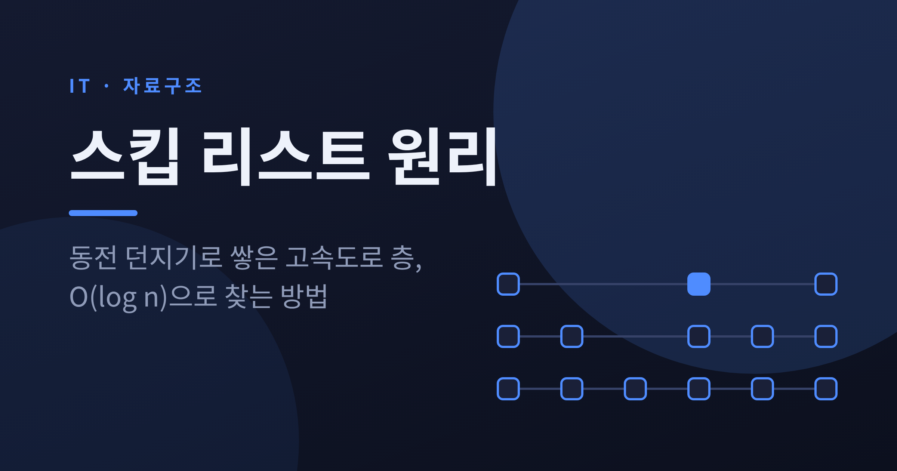
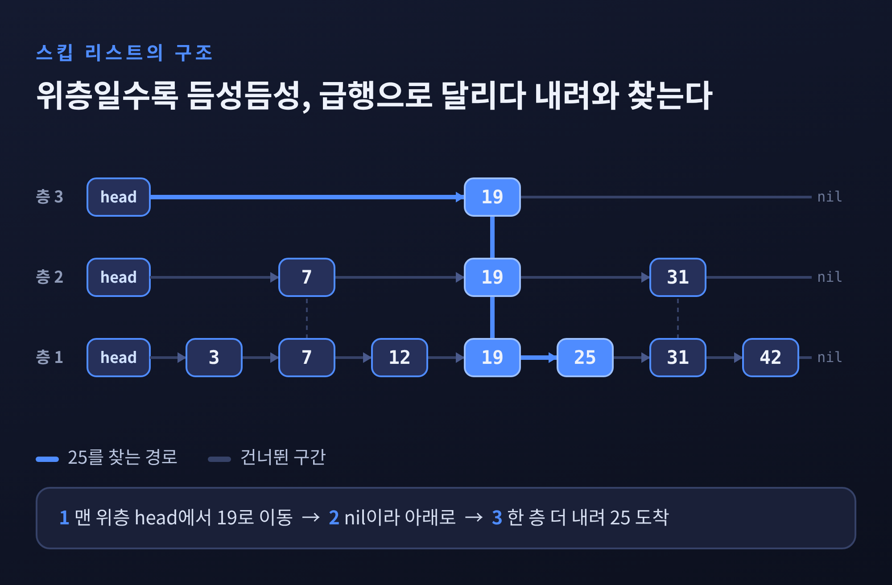
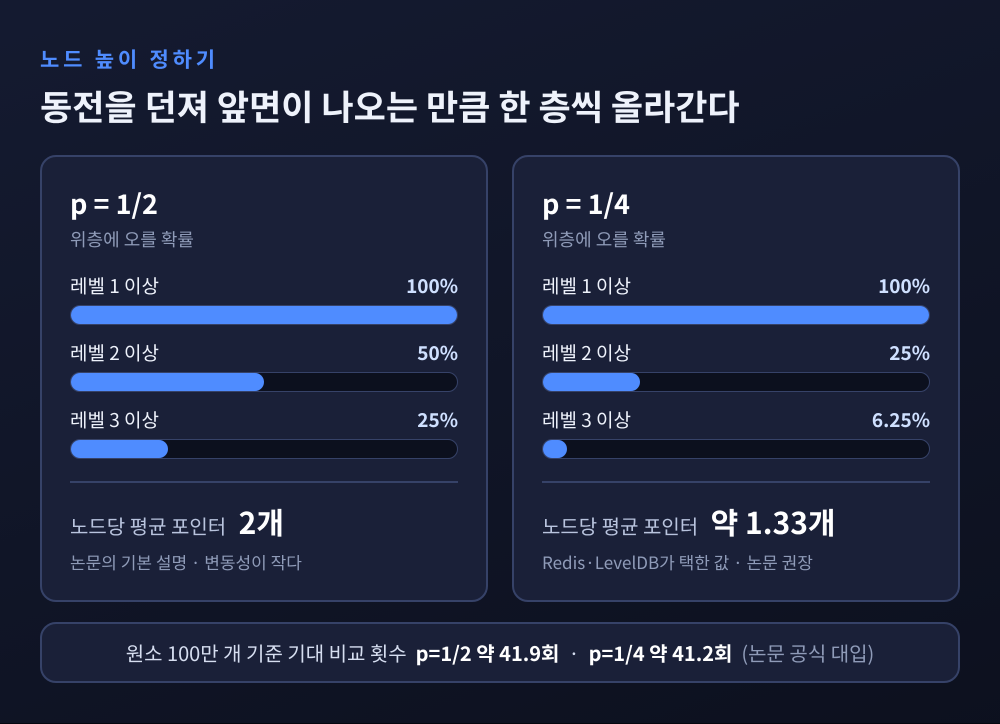
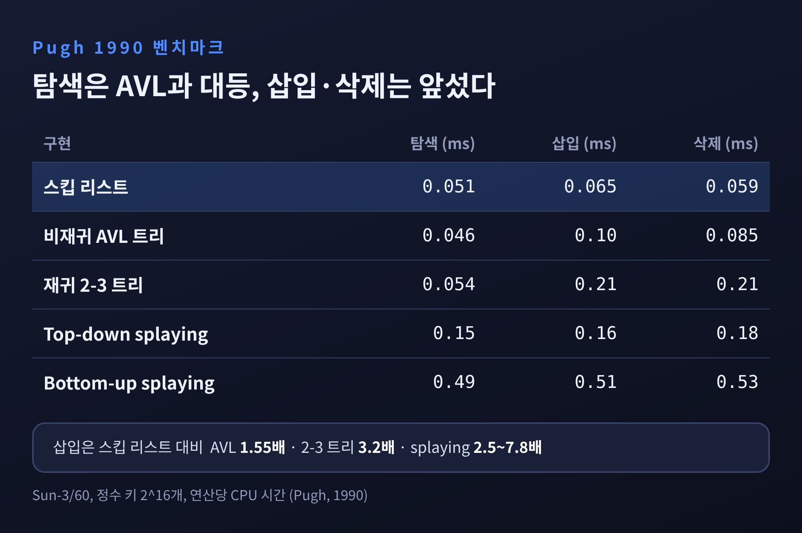
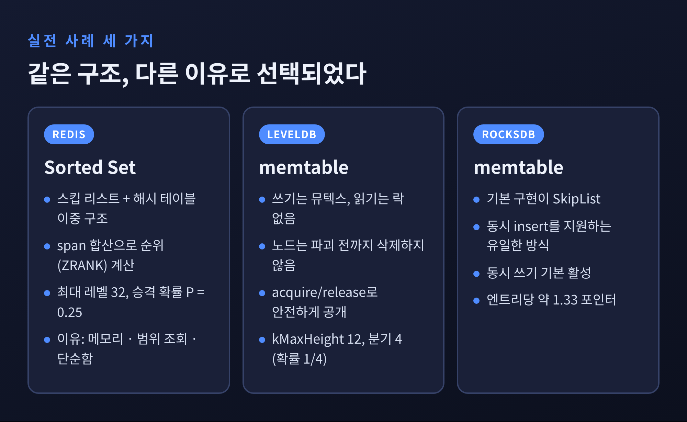
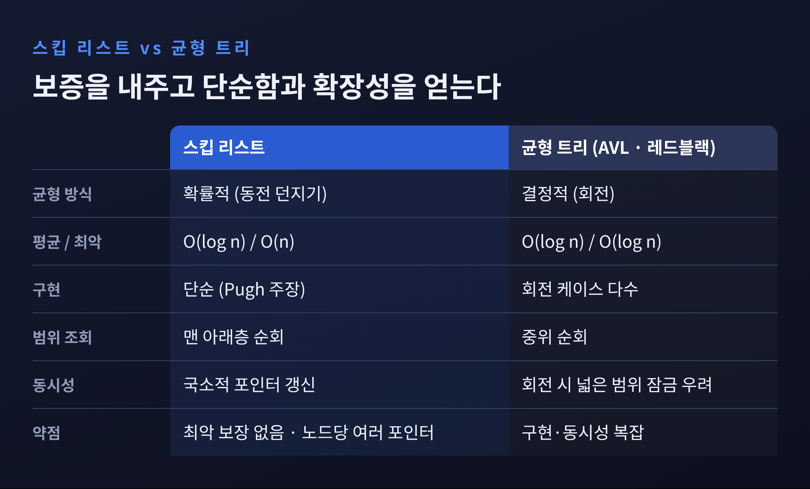

스킵 리스트 원리: 고속도로 층으로 O(log n) 탐색하는 법

오늘은 스킵 리스트(Skip List)의 원리를 정리해 보려 합니다.
Redis의 Sorted Set과 RocksDB의 memtable이 이 구조를 쓰는 이유까지 함께 살펴보겠습니다.
세 줄 요약
- 스킵 리스트는 정렬된 연결 리스트 위에 무작위로 높이를 정한 '고속도로 층'을 얹어, 평균 O(log n)에 탐색·삽입·삭제를 하는 자료구조입니다.
- 균형은 회전이 아니라 동전 던지기로 맞춥니다. 구현이 단순하고, 갱신이 국소적이라 동시성에서 유리합니다.
- 대가는 최악 보장이 없다는 점입니다. 그래도 Redis와 RocksDB는 이 대가를 감수할 만하다고 판단했습니다.
연결 리스트의 한계에서 출발합니다
정렬된 연결 리스트에서 값을 찾으려면 처음부터 하나씩 따라가야 합니다.
원소가 100만 개면 최악에는 100만 번 비교합니다. 배열처럼 가운데로 뛰어들 수가 없기 때문입니다.
이 문제를 풀려고 보통 균형 이진 탐색 트리를 씁니다. AVL 트리나 레드블랙 트리가 대표적입니다.
다만 트리는 삽입·삭제 때마다 균형을 지키기 위해 회전을 해야 합니다. 케이스가 많고 구현이 까다롭습니다.
William Pugh는 1989년 기술보고서에서 다른 길을 제시했습니다.
이듬해인 1990년 Communications of the ACM에 실린 논문 「Skip Lists: A Probabilistic Alternative to Balanced Trees」가 그 결실입니다.
논문 초록은 스킵 리스트가 "균형 트리를 대신해 쓸 수 있는" 자료구조라고 밝힙니다.
엄격한 균형을 강제하지 않고 확률로 균형을 맞추기 때문에 알고리즘이 훨씬 단순하고 빠르다는 주장입니다.
고속도로 층을 쌓는 구조
아이디어는 지하철의 급행과 완행에 가깝습니다.
맨 아래층은 모든 원소가 이어진 평범한 정렬 연결 리스트입니다. 완행 노선입니다.
그 위층은 일부 원소만 건너뛰며 잇습니다. 더 위층은 더 듬성듬성 잇습니다. 맨 위층이 가장 빠른 급행입니다.
각 노드는 자기 높이만큼의 forward 포인터를 가집니다.
높이가 3인 노드는 1층, 2층, 3층에 모두 참여하고, 높이가 1인 노드는 맨 아래층에만 있습니다.
탐색 규칙은 단순합니다.
- 맨 위층의 머리에서 출발합니다.
- 다음 노드의 키가 찾는 값보다 작으면 오른쪽으로 갑니다.
- 크거나 같으면 한 층 내려갑니다.
- 맨 아래층에서 목표에 닿으면 끝입니다.
그림의 예를 보겠습니다. 7개 원소 가운데 25를 찾는 경우입니다.
맨 위층에서 19까지 단번에 가고, 두 층을 내려와 바로 옆의 25를 만납니다.
아래층만 따라갔다면 3, 7, 12, 19, 25로 다섯 걸음이 필요했을 길입니다.

원소가 7개뿐이어서 차이가 작아 보입니다.
원소가 수십만 개로 늘어나면 위층이 건너뛰는 폭이 커지면서 차이가 극적으로 벌어집니다.
높이는 동전 던지기로 정합니다
여기서 의문이 생깁니다. 어떤 노드를 몇 층까지 올릴지는 누가 정할까요.
Pugh의 답은 무작위입니다. 노드를 삽입할 때 동전을 던집니다.
논문의 randomLevel 알고리즘은 이렇습니다. 높이를 1로 시작해, 난수가 p보다 작은 동안 한 층씩 올립니다. 상한은 MaxLevel입니다.
p가 1/2이면 앞면이 나올 때마다 한 층씩 오르는 셈입니다.
레벨 1 노드의 절반이 레벨 2로, 그중 절반이 레벨 3으로 올라갑니다. 위층일수록 기하급수적으로 드물어집니다.
이 분포가 곧 고속도로의 간격을 정합니다.
평균적으로 한 층 위로 갈수록 노드가 1/2로 줄어드니, 위층은 아래층의 절반 간격으로 듬성듬성해집니다.
이진 탐색이 매번 범위를 절반으로 줄이는 것과 같은 효과가 확률적으로 나타납니다.
논문이 제시한 기대 탐색 비용은 L(n)/p + 1/(1-p)이고, 여기서 L(n)은 밑이 1/p인 n의 로그입니다. 결과는 O(log n)입니다.
MaxLevel은 L(N)으로 잡으며, p=1/2일 때 16이면 2의 16제곱 개 원소까지 적절하다고 논문은 말합니다.
흥미로운 것은 p의 선택입니다. 논문은 실행 시간의 변동성이 큰 문제가 아니라면 p=1/4를 권합니다.
노드당 평균 포인터 수가 1/(1-p)이기 때문입니다. p=1/2면 2개, p=1/4면 약 1.33개입니다.
논문 공식에 원소 100만 개를 대입해 보면, 기대 비교 횟수는 p=1/2에서 약 41.9회, p=1/4에서 약 41.2회가 나옵니다.
탐색 비용은 거의 같은데 포인터는 3분의 1 가까이 줄어드는 셈입니다.
대신 p를 줄이면 실행 시간의 변동성은 커집니다. 변동성이 중요하다면 1/2를 쓰라는 단서가 붙는 이유입니다.

삽입도 이 규칙 위에서 단순하게 끝납니다.
탐색하며 각 층에서 '내려가기 직전의 노드'를 기억해 둡니다. 새 노드의 높이를 동전으로 정합니다. 기억해 둔 위치마다 포인터만 이어 붙입니다.
회전도, 전체 재균형도 없습니다. 삭제는 이 과정의 반대입니다.
벤치마크로 본 단순함의 값
Pugh는 논문에서 직접 속도를 쟀습니다.
Sun-3/60 기종에서 정수 키 2의 16제곱 개를 놓고 연산당 CPU 시간을 비교했습니다.

탐색은 스킵 리스트가 0.051ms, 비재귀 AVL 트리가 0.046ms로 AVL이 근소하게 빨랐습니다.
삽입은 스킵 리스트 0.065ms에 AVL 0.10ms, 재귀 2-3 트리 0.21ms였습니다. 삭제도 비슷한 양상이었습니다.
탐색은 대등하고, 갱신에서 앞선다는 것이 논문의 결과입니다.
다만 읽을 때 조심할 점이 있습니다. 1990년의 하드웨어와 정수 키 기준입니다.
논문 스스로도 실수 키에서는 스킵 리스트가 비재귀 AVL보다 약간 느렸다고 밝힙니다.
현대 CPU의 캐시 환경에서 같은 비율이 나온다고 단정할 수는 없습니다.
이 표에서 가져갈 것은 속도 순위가 아니라 '이렇게 단순한 구조가 정교한 트리와 같은 급'이라는 사실입니다.
Redis는 왜 Sorted Set에 스킵 리스트를 썼을까
Redis 공식 문서는 Sorted Set이 스킵 리스트와 해시 테이블을 함께 쓰는 이중 구조라고 설명합니다.
원소를 추가할 때마다 O(log N) 연산이 일어나고, 조회할 때는 이미 정렬되어 있어 따로 정렬하지 않는다고 합니다.
그래서 ZADD와 ZRANK는 O(log N), 범위 조회인 ZRANGE는 O(log(N)+M)입니다. M은 돌려줄 원소 수입니다.
두 구조의 역할이 나뉩니다. 해시 테이블은 멤버로 점수를 O(1)에 찾고, 스킵 리스트는 정렬·순위·범위를 맡습니다.
Redis 소스코드는 이 구현이 Pugh 알고리즘의 "거의 C 번역"이라면서 세 가지를 바꿨다고 적어 둡니다.
- 같은 점수(score)의 중복을 허용합니다.
- 비교가 점수만이 아니라 멤버 값까지 함께 이루어집니다.
- 맨 아래층에 backward 포인터를 두어 이중 연결 리스트로 만들었습니다.
각 레벨의 포인터에는 span이 붙습니다. 그 포인터가 건너뛰는 원소의 개수입니다.
탐색 경로의 span을 더하면 순위가 나오기 때문에 ZRANK도 O(log N)에 끝납니다. 앞서 소개한 '위치 인덱스가 가능한 스킵 리스트'를 그대로 구현한 것입니다.
파라미터는 server.h에 있습니다. 최대 레벨은 32로 "2의 64제곱 개 원소에도 충분"하다는 주석이 달려 있고, 승격 확률 P는 0.25입니다.
Pugh가 권한 1/4을 그대로 따랐습니다.
Redis의 창시자 antirez는 스킵 리스트를 고른 이유를 세 가지로 밝힌 바 있습니다.
- 메모리를 많이 쓰지 않는다. 레벨 확률을 조절하면 B-트리보다 가볍게 만들 수 있다.
- Sorted Set은 ZRANGE·ZREVRANGE의 대상이 되는 일이 많은데, 연결 리스트처럼 순회하므로 캐시 지역성이 다른 균형 트리 이상이다.
- 구현과 디버깅이 단순하다. 덕분에 O(log N) ZRANK 패치도 쉽게 붙였다.
세 이유 어디에도 동시성은 없습니다. Redis는 명령을 하나씩 실행하는 구조이기 때문입니다.
메모리, 범위 조회, 단순함이라는 실용적 이유가 전부였던 셈입니다.
LevelDB와 RocksDB의 memtable: 동시성이 빛나는 곳
반대로 동시성이 결정적인 곳이 LSM 계열 저장소의 memtable입니다.
LevelDB는 쓰기를 로그 파일에 먼저 남기고, 같은 내용의 복사본을 메모리의 memtable에 둡니다. 읽기는 항상 이 memtable을 거칩니다.
로그가 기본 약 4MB에 이르면 memtable은 정렬된 sstable로 변환되어 디스크로 내려갑니다.
memtable은 쓰기가 계속 들어오는 와중에 읽기도 받아야 하고, 마지막에는 정렬된 순서로 통째로 내보내야 합니다.
스킵 리스트는 이 요구와 잘 맞습니다. 삽입 즉시 정렬 상태가 유지되고, 맨 아래층을 따라가면 곧 정렬된 스캔이 되기 때문입니다.
LevelDB의 skiplist.h 주석은 규칙을 분명히 적어 둡니다.
- 쓰기는 외부 동기화, 대체로 뮤텍스가 필요합니다.
- 읽기는 스킵 리스트가 파괴되지 않는다는 보장만 있으면 되고, 별도의 락이 필요 없습니다.
- 한 번 할당한 노드는 스킵 리스트가 파괴될 때까지 삭제되지 않습니다.
- 노드의 내용은 연결된 뒤 next/prev 포인터를 빼고는 바뀌지 않습니다.
구현에는 acquire load와 release store가 쓰입니다. 새 노드를 완전히 초기화한 다음에야 포인터를 공개하므로, 읽는 쪽은 반쯤 만들어진 노드를 볼 일이 없습니다.
상수도 눈에 띕니다. kMaxHeight는 12, 높이를 올릴 확률은 kBranching 4분의 1입니다. Redis와 같은 1/4입니다.
RocksDB는 한 걸음 더 나아갑니다. memtable의 기본 구현이 SkipList이고, 위키의 비교표에서 동시 insert를 지원하는 것은 스킵 리스트 하나뿐입니다.
HashSkipList, HashLinkList, Vector 방식은 지원하지 않습니다.
동시 memtable 쓰기는 기본으로 켜져 있어서(allow_concurrent_memtable_write) 여러 스레드가 같은 memtable에 동시에 쓸 수 있습니다. 끄면 쓰기가 순차로 적용됩니다.
스킵 리스트의 전체 순서 스캔은 "자연스럽다"고 표에 적혀 있는 반면, 다른 방식은 복사해서 정렬해야 해 비용이 큽니다. flush가 빠르고 추가 메모리가 일정하다는 점도 장점입니다.
메모리 오버헤드는 엔트리당 약 1.33개 포인터로 '평균' 수준입니다. 앞서 본 p=1/4의 평균 포인터 수와 일치합니다.

왜 동시성에 유리한가
Pugh의 논문은 여러 프로세서가 공유 메모리의 스킵 리스트를 동시에 갱신하는 알고리즘이 있고, 동시성 균형 트리 알고리즘보다 "훨씬 단순하다"고 주장합니다.
읽는 쪽은 무제한, 쓰는 쪽은 n개가 바쁘게 움직여도 락 경합이 매우 적다는 것입니다.
이유는 갱신이 만지는 범위에서 나옵니다.
트리의 회전은 위쪽 여러 노드의 연결을 바꿀 수 있어서, 넓은 범위를 잠가야 할 위험이 있습니다.
스킵 리스트의 삽입은 새 노드와 그 이웃 몇 곳의 포인터만 바꿉니다. 서로 다른 위치의 삽입은 전역 재균형 없이 병렬로 진행할 수 있습니다. Wikipedia도 같은 점을 짚습니다.
자바의 ConcurrentSkipListMap이 대표 사례입니다.
Oracle 문서는 이 클래스가 스킵 리스트의 동시성 변형으로, containsKey·get·put·remove에 평균 log(n) 시간을 제공하며 여러 스레드가 안전하게 동시 실행할 수 있다고 설명합니다.
iterator는 weakly consistent라서, 순회 중 일어난 변경이 일부만 보일 수 있습니다. 이 점은 한계로 알아 둘 필요가 있습니다.
균형 트리와 나란히 놓아 보면

가장 큰 차이는 보증의 종류입니다.
균형 트리는 최악에도 O(log n)을 약속합니다. 스킵 리스트는 평균에 O(log n)이고, 최악은 O(n)입니다.
동전 던지기가 극히 낮은 확률로 지독히 불균형한 구조를 만들 수 있기 때문입니다. 공간도 최악에는 O(n log n)입니다.
예전엔 최악 보장이 없다는 말이 곧 탈락 사유처럼 들렸습니다.
지금은 Redis와 RocksDB처럼, 단순한 구현과 쉬운 동시성의 이득이 그 위험보다 크다고 판단한 시스템이 이 구조를 실제로 씁니다.
물론 모든 상황에 맞는 답은 아닙니다. 지연 시간의 상한이 반드시 필요한 곳이라면 결정적 균형 구조가 더 안전합니다.
또 위치 정보를 쓰려면 span 같은 부가 정보를 따로 유지해야 합니다.
정리하면 이렇습니다.
스킵 리스트는 "회전 대신 동전 던지기"라는 발상으로 균형 트리와 같은 평균 성능을 훨씬 단순한 코드로 얻습니다.
메모리와 범위 조회에서는 Redis가, 동시 쓰기와 정렬된 flush에서는 RocksDB가 그 이점을 가져다 썼습니다.
결국 남는 것은 하나입니다. 완벽한 보장을 포기하는 대신 단순함과 확장성을 얻는 선택도 훌륭한 설계가 될 수 있다는 점입니다.
다음에 Sorted Set에 점수를 넣으실 때, 그 아래에서 동전을 던지며 쌓이는 층들을 한 번쯤 떠올려 보시길 권합니다.